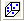

Oberfläche mit benutzerdefinierter Funktion anpassen
SurfaceFit-with-UserDef-FitFunc
Zusammenfassung
Origin enthält ein Hilfsmittel für die Nichtlineare Oberflächenanpassung, mit dem Oberflächen angepasst werden können. Sie können zusätzlich zu den Standardfunktionen für die Oberflächenanpassung auch Ihre eigenen Anpassungsfunktionen im Dialog Fitfunktion erstellen erstellen.
In diesem Tutorial wird erklärt, wie eine benutzerdefinierte Oberflächenanpassungsfunktion im Dialog Fitfunktion erstellen erstellt und der nichtlineare Kurvenfit mit dem Hilfsmittel NLFit durchgeführt wird.
Origin-Version mind. erforderlich: Origin 2016 SR0
Was Sie lernen werden
Dieses Tutorial zeigt Ihnen, wie Sie:
- eine benutzerdefinierte Oberflächenanpassungsfunktion mit dem Hilfsmittel Fitfunktion erstellen erstellen.
- eine nichtlineare Oberflächenanpassung mit einer benutzerdefinierten Fitfunktion durchführen.
Schritte
Die Daten, die wir anpassen werden, befinden sich in der Datei PolynomialSurface.dat unter <Origin-Verzeichnis>\Samples\Curve Fitting\.
Die zu erstellende Anpassungsfunktion wird unten gezeigt:

in der
 die abhängige Variable ist
die abhängige Variable ist
 und
und  unabhängige Variablen sind
unabhängige Variablen sind
und alle Anpassungsparameter sind.
Oberflächenanpassungsfunktion erstellen
In diesem Abschnitt wird gezeigt, wie eine benutzerdefinierte Oberflächenanpassungsfunktion mit dem Hilfsmittel Fitfunktionen erstellen erstellt wird. Es gibt allerdings das alternative Hilfsmittel Fitfunktionen verwalten, das ebenfalls dazu verwendet werden kann, benutzerdefinierte Oberflächenanpassungsfunktionen zu erstellen (öffnen Sie es durch Auswahl von Hilfsmittel: Fitfunktionen verwalten oder drücken Sie F9).
- Starten Sie Origin und wählen Sie Hilfsmittel: Fitfunktionen erstellen im Menü (oder drücken Sie F8), um den Dialog Fitfunktionen erstellen zu öffnen.
- Wählen Sie auf der Seite Ziel die Option Eine neue Funktion erstellen und klicken Sie auf Weiter.
- Wählen Sie auf der Seite Name und Typ die Oberflächenanpassung in der Auswahlliste Eine Kategorie auswählen oder erstellen, da das Hilfsmittel Nichtlineare Oberflächenanpassung Funktionen nur in der Kategorie Oberflächenanpassung startet.
- Geben Sie den Namen "MeinePolynomielleOberfläche" in Funktionsname ein und wählen Sie Ausdruck unter Funktionstyp. Klicken Sie auf Weiter.
- Geben Sie auf der Seite Variablen und Parameter die Namen für Variable und Parameter ein, wie im Bild unten zu sehen, und klicken Sie dann auf Weiter:
Verwenden Sie im Feld Parameter ein Komma (",") als Trennzeichen.
- Geben Sie auf der Seite Ausdrucksfunktion die Gleichung unten im Funktionskörper ein:
z0+A1*x+A3*x^3+B1*y+B3*y^3+C*x*y+C2*x^2*y+C3*x*y^2
- Geben Sie den Parametern geschätzte Initialisierungswerte gemäß dieser speziellen Daten und Funktion.
 | - Sie können auch jedes Mal, wenn Sie die eigentliche Anpassung durchführen, unterschiedliche Anfangswerte eingeben.
- Klicken Sie auf die Schaltfläche Auswerten
 , um schnell zu prüfen, ob die Funktion gültig ist (wenn sie gültig ist, wird ein tatsächlicher Wert für Z wiedergegeben). , um schnell zu prüfen, ob die Funktion gültig ist (wenn sie gültig ist, wird ein tatsächlicher Wert für Z wiedergegeben).
|
- Klicken Sie auf Fertigstellen, um dieser benutzerdefinierte Anpassungsfunktion zu erstellen. Die .FDF-Datei wird in dem Anwenderdateiordner gespeichert.
| Sie können die benutzerdefinierte Fitfunktion später immer ändern, entweder über den Dialog Fitfunktionen erstellen (wählen Sie dazu Eine benutzerdefinierte Funktion bearbeiten auf der Seite Ziel) oder den Dialog Fitfunktionen verwalten. |
Oberflächenanpassung durchführen
- Öffnen Sie eine neue Arbeitsmappe. Klicken Sie auf die Schaltfläche
 , um die Datei PolynomialSurface.dat im Verzeichnis <Origin-Verzeichnis>\Samples\Curve Fitting\ zu importieren.
, um die Datei PolynomialSurface.dat im Verzeichnis <Origin-Verzeichnis>\Samples\Curve Fitting\ zu importieren. - Klicken Sie mit der rechten Maustaste auf die Spalte C und wählen Sie Setzen als: Z.
- Lassen Sie das Arbeitsblatt aktiviert und wählen Sie Analyse: Anpassen: Nichtlineare Oberflächenanpassung, um den Dialog NLFit aufzurufen.
- Auf der Seite Funktionsauswahl können Sie sehen, dass die Kategorie nur lesbar und auf Oberfläche gesetzt ist. Setzen Sie die Funktion auf MeinePolynomielleOberfläche(User).
- Klicken Sie auf die Schaltfläche Fit, um die Anpassung durchzuführen.
- Es wird ein Berichtsblatt erzeugt, in dem der angepasste Wert von allen Parametern in der Parametertabelle aufgeführt werden. Es wird außerdem ein Arbeitsblatt mit dem Namen A FitSurfaceCurve zur Quellarbeitsmappe hinzugefügt, in dem die Daten der angepassten Oberfläche gespeichert werden.
- Aktivieren Sie das Quellarbeitsblatt und markieren Sie Spalte col(C). Klicken Sie auf die Schaltfläche , um ein 3D-Punktdiagramm zu erzeugen. Um die angepasste Oberfläche zu den Quelldaten hinzuzufügen, klicken Sie doppelt auf das Symbol Layer 1. Klicken Sie in dem aufgerufenen Dialog Layerinhalt auf die Auswahlliste in der oberen linken Ecke und wählen Sie Arbeitsblätter im Ordner. Wählen Sie im Bedienfeld unter der Auswahlliste Z anpassen für das Arbeitsblatt FitSurfaceCurve1, klicken Sie auf den nach unten weisenden Pfeil in der Mitte des Dialogs und ändern Sie den Diagrammtyp in 3D - Oberfläche. Klicken Sie auf den rechts weisenden Pfeil gleich darunter, um den Datensatz zum rechten Bedienfeld hinzuzufügen.
Klicken Sie auf OK, um die Oberfläche zum Diagramm der Quelldaten hinzuzufügen.

| Hinweis: In Origjn 2016 und höher steht nun die App Polynomial Surface Fit zur Verfügung. Wenn Sie eine polynomielle Oberfläche anpassen möchten, wird empfohlen, zunächst diese App zu verwenden.
|